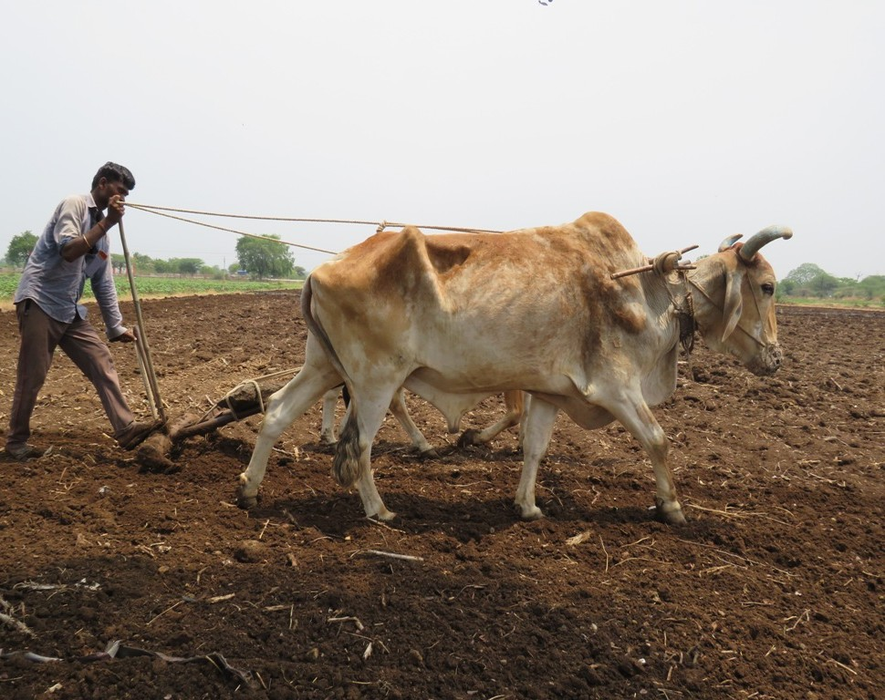

3000 BC
A survivor of
A survivor of
five millennia.
The Karunganni landrace predates modern agriculture.
The 0.01%
Rain-fed.
Rain-fed.
Rain-born.
We harvest only where the monsoon dictates.
The Vitality
Earth
Earth
Chemistry.
Pigments borrowed from barks and mineral-heavy clays.
Hand-Signed
Woven
Woven
Dignity.
Every thread is a sovereign choice.

Archive 01
Provenance

Archive 02
Atelier
The Four Alchemies
The Genesis of the Object
I. The Seed
Sourced exclusively from the final custodians of the Primordial seed.
II. The Thread
Hand-spun using the Amber Charkha. This slow, rhythmic cadence preserves high-tensile strength.
III. The Color
A palette birthed from the earth, using pigments extracted from barks and minerals.
IV. The Loom
Hand-woven to perfection. A structural integrity unique to heritage craft.
The 2027 Resumption
After years of perfecting our ancestral craft,
Felis Onca will open its first physical spaces in one year.
The journey into touch begins shortly
→
Our Genesis
27